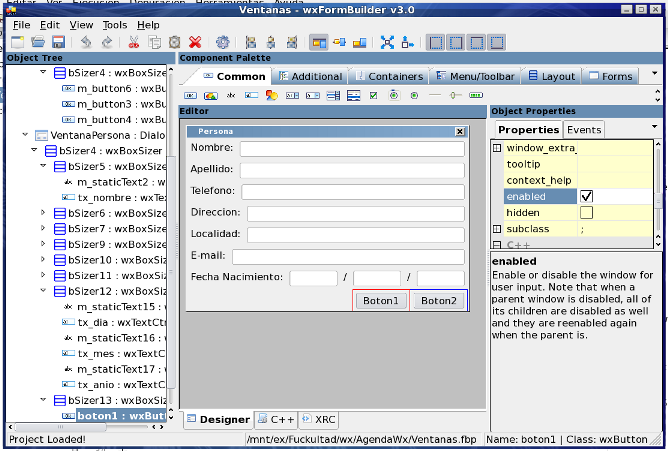

Diseño de Interfases con wxFormBuilder
Esta sección de la ayuda aún se encuentra incompleta. A continuación se describen rápidamente sólo los aspectos básicos de esta funcionalidad.
wxFormBuilder es una herramienta que permite diseñar de forma rápida y visual interfases basadas en la biblioteca wxWidgets. Esta herramienta puede generar dos tipos de archivos útiles desde ZinjaI: archivos de recursos xml y codigo fuente c++. Los archivos de recursos incluyen la definición de todos los componentes visuales; para utilizarlos el usuario debe llamar a funciones de wxWidgets que permiten leerlos, crearlos, y obtener punteros a los mismos.

El código fuente que genera corresponde a clases que representan a las ventanas y en sus constructores incluyen el código necesario para crear todos los componentes visuales, los cuales se referenciarán más tarde median punteros colocados como atributos en estas clases. Incluyen como métodos virtuales los correspondientes a los eventos de la ventana y sus controles. De esta forma, el programador sólo debe heredar de estas clases y sobreescribir sólamente los métodos que desee. Cuando algo se modifica en el proyecto wxFormBuilder, al compilar ZinjaI lo invocará para regenerar automáticamente estas clases bases, por lo que el usuario no debe modificarlas manualmente, sino sólo utilizarlas para heredar sus propias clases.
Entonces, cuando un proyecto ZinjaI se configura para utilizar wxFormBuilder (desde el menú Herramientas), se añade un paso adicional a la compilación (regenerar los fuentes de las clases bases si el diseño de la interfaz fue modificado) y se asocia dicha herramienta a los archivos de extensión fbp (se abre automáticamente el editor al hacer doble click sobre los mismos en el árbol de archivos).
De esta forma, el diseño de una aplicación visual se simplifica considerablemente. El programador debe incluir un nuevo proyecto wxFormBuilder en el proyecto ZinjaI (desde el menú Herramientas, o utilizando la plantilla de proyecto correspondiente). Luego debe diseñar su interfaz con wxFormBuilder, para heredar las clases para sus ventanas y sobreescribir el comportamiento de los métodos. Para generar las clases heredadas puede usar la opción correspondiente del menú Herramientas de ZinjaI y simplificar aún más el proceso.
Importante: wxFormBuilder no se incluye en el instalador de ZinjaI, sino que debe instalarse por separado. Puede obtenerse en wxformbuilder.org. Si la instalación del mismo no es estándar, debe configurar el comando para invocarlo (incluyendo el path completo de ser necesario) en la pestaña Rutas 2 del diálogo de Preferencias.